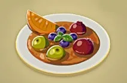

Breakfast
Meals
Simmered Fruit
 $2.40
This sweet dish is made by heaping tasty fruits into a pan and simmering until tender. 50 calories
Omelet
 $1.70
$1.70
This simple dish is common all over Hyrule. Simply fry egg until it's nice and plump. 80 calories
Hot Buttered Apple
 $1.20
$1.20
This apple's sweetness has been enhanced by smothering it with butter and baking it. 100 calories
Honey Crepe
 $3.90
$3.90
Honey has been drizzled over thin crepes to bring out their natural sweetness and flavor. 100 calories
Veggie Porridge
 $3.00
$3.00
Porridge made of easy-to-digest vegetables, fresh milk, and Hylian rice. An uplifting dish. 60 calories
Drinks
Milk
 $0.20
$0.20
Make this by heating up some milk. Drink it before bed to ensure a good night's sleep. 30 calories
Energizing Elixir
 $0.49
$0.49
Restores your stamina, which is used when performing physical actions such as climbing walls or swimming. 35 calories